9 - GenAI Model Families
After this lecture you should be able to:
- Explain the core mechanisms of the major generative model families: autoregressive models, GANs, VAEs, diffusion models, and flow-based models (normalizing flows and flow matching)
- Compare the tradeoffs of each family across sampling speed, output quality, coverage, and likelihood computation
- Identify the key strengths and limitations of each family
- Understand how conditional generation can be applied within each model family
The major generative model families make different tradeoffs. Autoregressive models factorize the data distribution sequentially and compute exact likelihood, but generation is slow and cannot be parallelized. GANs use an adversarial generator–discriminator game for fast, sharp sampling, but training can be unstable and mode collapse is a risk. VAEs learn a structured probabilistic latent space with stable training, but classical VAEs tend to produce blurrier outputs. Diffusion models learn to reverse a noising process and currently deliver state-of-the-art image quality and diversity, at the cost of iterative, compute-intensive sampling. Normalizing flows use invertible transformations for exact likelihoods, at the cost of restricted architectures. Flow matching learns a velocity field that transports noise to data along (nearly) straight paths; it is simple to train and underlies many modern text-to-image models. Conditional generation — where models additionally receive a class label, text prompt, image, or mask — can be applied within any of these families.
1 Generative Model Families
Over the past decade, several families of generative models have emerged. They differ in how they model the data distribution, how they generate samples, and which tradeoffs they make. We introduce a few of the most important ones in the following sections. Note that this list is not exhaustive.
1.1 Training Objectives and Sampling
Maximum likelihood is an important principle (see Generative AI for Computer Vision), but it is not the only one. Generative model families differ in how they are trained and in how they produce samples. Table 1 provides a high-level overview. We discuss the most important families in detail in the following sections.
| Model family | Training principle | Sampling |
|---|---|---|
| Autoregressive (Oord, Kalchbrenner, and Kavukcuoglu 2016) | maximum likelihood (exact) | sequential: one pixel or token at a time |
| Variational autoencoder (VAE) (Kingma and Welling 2014) | maximize a lower bound on the likelihood (ELBO) | sample a latent vector, decode it in one pass |
| Normalizing flow (Dinh et al. 2017) | maximum likelihood (exact, via invertible transformations) | transform a noise sample through the invertible network |
| GAN (Goodfellow et al. 2014) | adversarial objective: generator vs. discriminator | one generator forward pass |
| Diffusion (Ho et al. 2020; Song et al. 2021) | learn to denoise (denoising score matching) | iterative denoising, starting from pure noise |
| Flow matching (Lipman et al. 2023) | regress a velocity field that transports noise to data | integrate the learned velocity field, starting from noise |
All of these families aim at the same goal, \(p_{\theta}(\mathbf{x}) \approx p_{\text{data}}(\mathbf{x})\), but only some of them directly optimize the log-likelihood. GANs never evaluate a density at all: a discriminator network judges whether samples look real. Diffusion models are related to a likelihood bound, but in practice they are trained with a simplified denoising loss that prioritizes sample quality (Ho et al. 2020).
Figure 1 illustrates how the families produce a sample: in a single network evaluation, token by token, or by gradually transforming noise into an image.
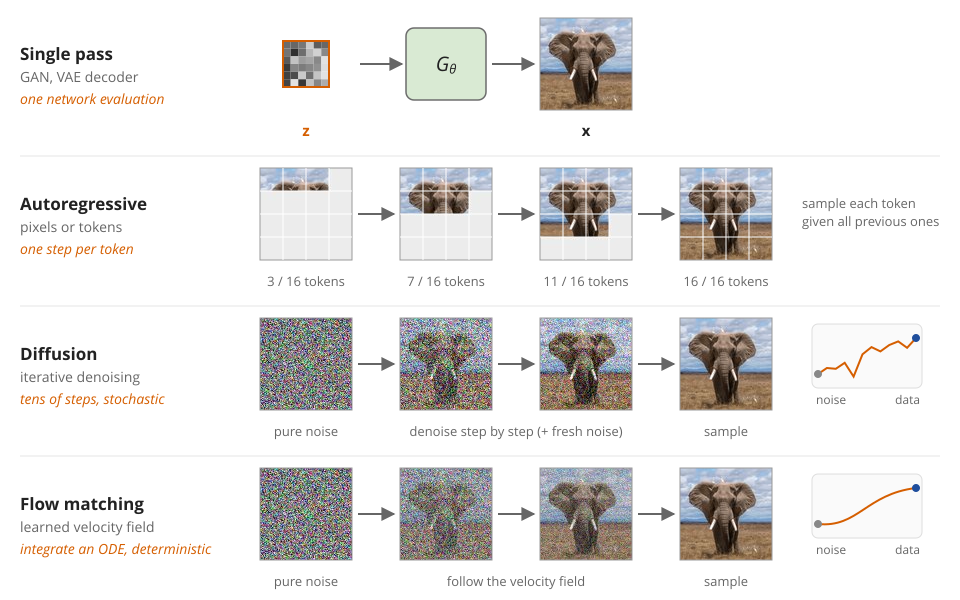
Generative models share a common goal: \(p_{\theta}(\mathbf{x}) \approx p_{\text{data}}(\mathbf{x})\). They differ in what they optimize to reach it and in how they generate samples.
2 Autoregressive Models
Autoregressive models generate data sequentially, predicting one element at a time conditioned on all previous elements.
For an image represented as a sequence of pixels, patches, or discrete image tokens \(x_1, x_2, \ldots, x_n\), the joint distribution can be factorized as a product of conditionals:
\[ p(x_1, x_2, \ldots, x_n) = p(x_1) \cdot p(x_2|x_1) \cdot p(x_3|x_1,x_2) \cdots p(x_n|x_1,\ldots,x_{n-1}) \]
During generation, the model samples step by step:
- Sample \(x_1 \sim p(x_1)\)
- Sample \(x_2 \sim p(x_2|x_1)\)
- Sample \(x_3 \sim p(x_3|x_1,x_2)\)
- Continue until all pixels generated
Autoregressive models turn image generation into a sequence prediction problem.
Each conditional \(p(x_i|x_1,\ldots,x_{i-1})\) is modeled by a neural network (typically a masked CNN or Transformer). This sequential factorization turns the complex problem of modeling high-dimensional distributions into a series of simpler conditional distributions.
Figure Figure 2 illustrates the autoregressive generation process. The model generates pixels one by one, conditioning on all previously generated pixels. This allows for exact likelihood computation, but the sequential nature makes sampling slow and limits parallelization.
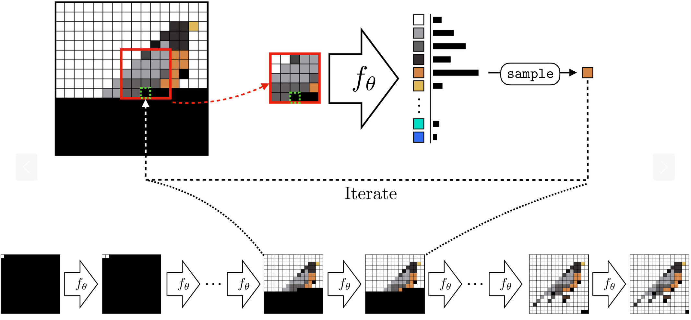
Autoregressive ideas are still very important. Many modern multimodal systems use LLM-like components, visual tokens, or autoregressive reasoning, even if the final image generation is diffusion-based.
A prominent example of autoregressive models is PixelCNN (Oord, Kalchbrenner, Vinyals, et al. 2016), which uses masked convolutions to ensure the autoregressive property. More recently, transformer-based autoregressive models (e.g., Parti Yu et al. (2022)) have shown strong performance by modeling images as sequences of discrete tokens. Also, OpenAI’s GPT Image / 4o image generation is described by OpenAI as an autoregressive, natively multimodal image generation model, in contrast to DALL·E-style diffusion models. The exact image tokenization and decoder architecture are not publicly specified.
Pros
- Exact likelihood computation
- Natural fit for language models
- Strong for discrete tokens
Cons
- Sequential generation is slow
- Pixel-level image generation is expensive
- High-resolution images require long sequences
- Errors can accumulate during sampling
3 Generative Adversarial Networks
GANs, see Goodfellow et al. (2014), frame generative modeling as an adversarial game between two neural networks: a generator \(g(\mathbf{z})\) that creates fake samples, and a discriminator \(d(\mathbf{x})\) that tries to distinguish real data from generated fakes (see Figure 3). This adversarial setup drives both networks to improve: the generator learns to create increasingly realistic samples, while the discriminator becomes better at spotting fakes.
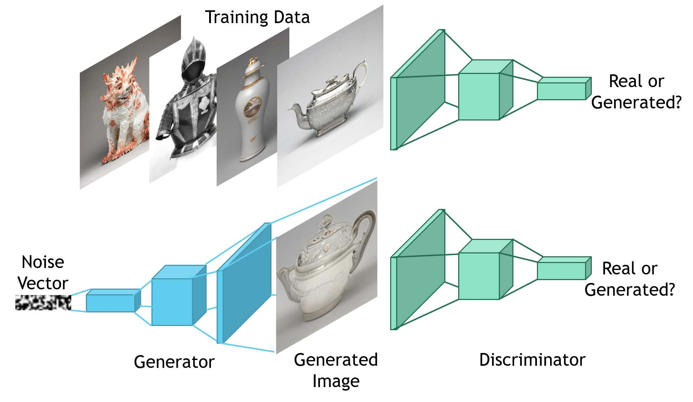
The GAN training objective can be expressed as a minimax game:
\[ \min_{g} \max_{d} \mathbb{E}_{\mathbf{x} \sim p_{data}}[\log d(\mathbf{x})] + \mathbb{E}_{\mathbf{z} \sim p_z}[\log(1 - d(g(\mathbf{z})))] \]
The discriminator \(d\) maximizes its ability to correctly classify real (\(d(\mathbf{x}) \approx 1\)) vs. fake (\(d(g(\mathbf{z})) \approx 0\)) samples. The generator \(G\) minimizes the discriminator’s success, trying to produce samples where \(d(g(\mathbf{z})) \approx 1\) (fooling the discriminator). See Figure 4 for an illustration.
In practice, training alternates between: 1. Discriminator step: Update \(d\) to better distinguish real from fake 2. Generator step: Update \(g\) to better fool the current discriminator
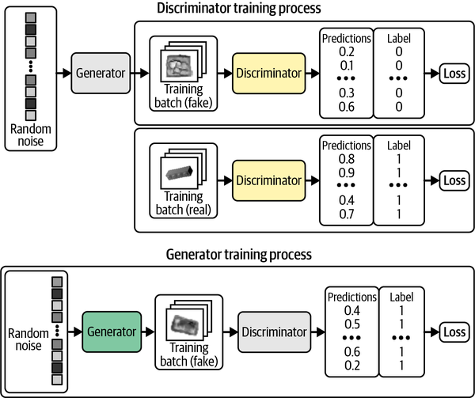
Pros
- Fast sampling: one forward pass
- Can produce sharp images
- Historically very important for image generation
Cons
- Training can be unstable
- Mode collapse: generator produces limited variety
- No direct likelihood computation
- Modern text-to-image systems are less commonly pure GANs
4 Variational Autoencoders
Variational Autoencoders (VAEs) (Kingma and Welling 2014) take a different approach to generative modeling, building on the autoencoder architecture (see Figure 5) but with a crucial probabilistic twist.
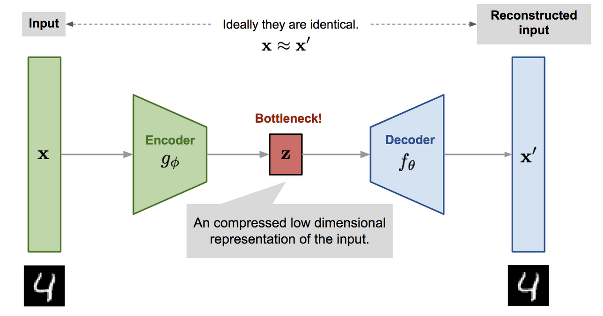
A VAE learns two networks that perform (approximate) inverse operations:
- Encoder \(q_{\psi}(z|x)\): Maps data \(x\) to a distribution over latent codes \(z\)
- Decoder \(p_{\theta}(x|z)\): Maps latent codes \(z\) back to data \(x\)
Unlike standard autoencoders, VAEs enforce structure on the latent space through probabilistic modeling (see Figure 6), ensuring that randomly sampled latent codes produce meaningful outputs.
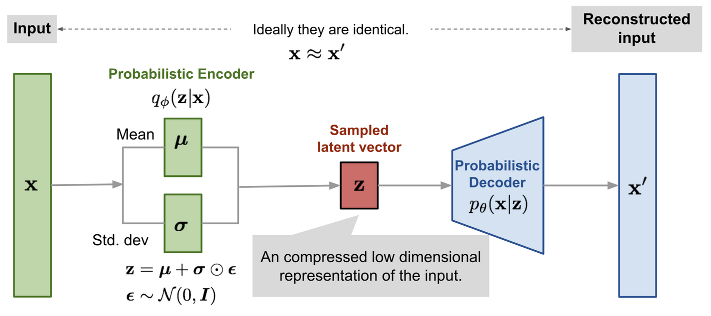
VAEs optimize the Evidence Lower Bound (ELBO), which consists of two terms:
\[ \text{ELBO} = \underbrace{\mathbb{E}_{z \sim q_{\psi}(z|x)}[\log p_{\theta}(x|z)]}_{\text{Reconstruction}} - \underbrace{\text{KL}(q_{\psi}(z|x) \| p(z))}_{\text{Regularization}} \]
The reconstruction term ensures the decoder can recover the input from the latent code. The KL regularization term (typically with prior \(p(z) = \mathcal{N}(0, I)\)) prevents the latent space from developing “gaps and tendrils”—ensuring that random samples from \(\mathcal{N}(0, I)\) decode to meaningful outputs.
This balance is key to VAE behavior: the reconstruction loss wants to use the latent space flexibly, while KL regularization pushes latent codes toward a standard normal distribution. The result is a structured, continuous latent space where interpolation and attribute manipulation work smoothly.
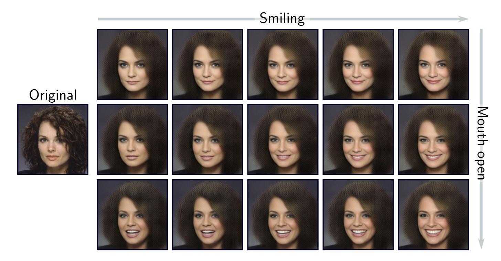
Pros
- Principled probabilistic foundation
- Latent space structure: can interpolate in latent space and interpret factors
- Stable training
- Can be used for representation learning
Cons
- Blurry outputs (more complex variants can reduce this)
5 Diffusion Models
Diffusion models Ho et al. (2020) Sohl-Dickstein et al. (2015) have emerged as the state-of-the-art approach for high-quality image generation, powering systems like Stable Diffusion. The core insight is remarkably simple: learn to reverse a gradual noising process.
Figure 8 shows the forward diffusion process, whereby Gaussian noise is gradually added to an image (from left to right).
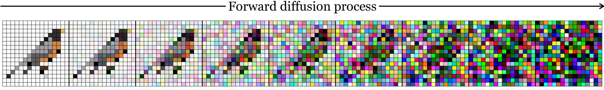
The Gaussian noise is added to data over \(T\) steps, following a pre-specified noise schedule. The forward noising process is fixed and does not involve a neural network. However, it is stochastic because Gaussian noise is sampled.
The forward process at step \(t\) can be written as:
\[\begin{equation} \mathbf{x}_t = \sqrt{1-\beta_t}\mathbf{x}_{t-1} + \sqrt{\beta_t}\mathbf{\epsilon}_t, \quad \mathbf{\epsilon}_t \sim \mathcal{N}(\mathbf{0}, \mathbfit{I}) \end{equation}\]
where \(\beta_t\) controls the noise level (the noise schedule). This process gradually degrades the clean image \(\mathbf{x}_0\) into an almost pure-noise image \(\mathbf{x}_T \approx \mathcal{N}(\mathbf{0}, \mathbfit{I})\).
Common noise schedules, such as linear or cosine schedules, start with small \(\beta_t\) values and gradually increase them. This produces a smooth transition from data to noise.
A crucial mathematical property is that we can sample \(\mathbf{x}_t\) directly from \(\mathbf{x}_0\) without iterating through all intermediate steps. This enables efficient training: we randomly sample timesteps and train the denoiser on many noise levels simultaneously.
The core idea is to train a neural network to model the reverse diffusion process, thus going in the opposite direction and denoise an image. Figure 9 shows the idea.
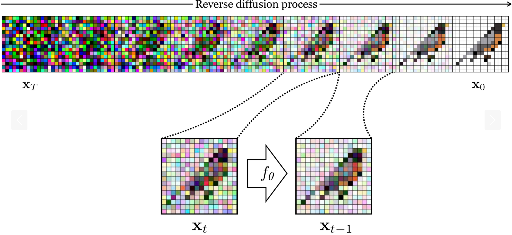
A neural network learns to gradually remove noise, step by step. Starting from pure noise
\[ \mathbf{x}_T \sim \mathcal{N}(\mathbf{0}, \mathbfit{I}), \]
the model denoises iteratively to produce a realistic sample \(\mathbf{x}_0\).
The neural network learns to predict the noise \(\mathbf{\epsilon}\) that was added at a given timestep. Crucially, the network is conditioned on the timestep \(t\), since the noise level varies dramatically from early timesteps, where the image is almost clean, to late timesteps, where it is almost pure noise.
A common simplified training objective is:
\[\begin{equation} \mathcal{L} = \mathbb{E}_{t, \mathbf{x}_0, \mathbf{\epsilon}} \left[ \left\| \mathbf{\epsilon} - f_\theta(\mathbf{x}_t, t) \right\|^2 \right] \end{equation}\]
The model is trained to predict the noise \(\mathbf{\epsilon}\) that was used to create the noised image \(\mathbf{x}_t\) from the clean image \(\mathbf{x}_0\).
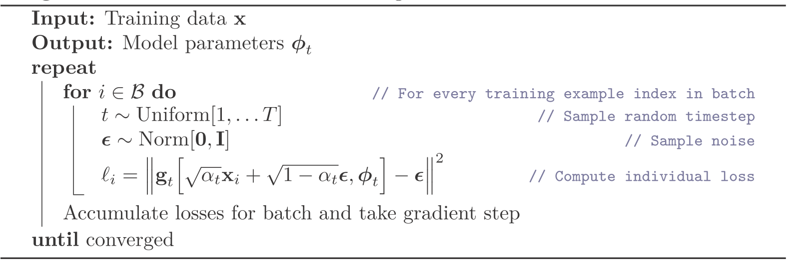
The denoising network typically uses a U-Net architecture—a convolutional encoder-decoder with skip connections. The U-Net processes noisy images at multiple resolutions, with timestep \(t\) embedded and injected throughout the network.
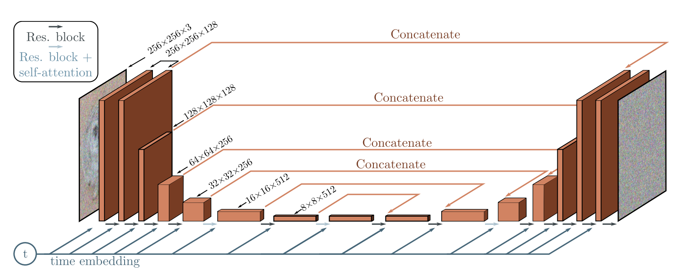
Pros
- High-quality, diverse outputs
- Stable and reliable training
Cons
- Slow inference time
- High compute (training + inference) cost
While the standard diffusion framework has proven highly successful, researchers have explored numerous extensions and modifications:
Cold Diffusion (Bansal et al. 2022) demonstrates that the Gaussian noise assumption is not fundamental to diffusion models. The key insight: any degradation process that can be inverted works. Instead of adding Gaussian noise, Cold Diffusion applies transformations like blurring, pixelation, or masking—yet still learns to reverse them through the same denoising framework.
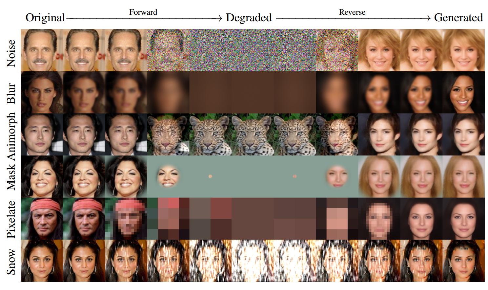
This generalization reveals that diffusion’s success stems from the gradual, multi-step inversion strategy rather than the specific choice of Gaussian noise. The framework adapts to diverse degradation operators, opening possibilities for task-specific degradations that may better suit particular domains or applications.
6 Flow-Based Models
Flow-based models take yet another perspective: they transform a simple distribution, such as a standard Gaussian, into the data distribution. The name refers to the idea that probability mass “flows” from the noise distribution to the data distribution. Two variants are important: normalizing flows, which use a sequence of invertible transformations, and flow matching, which learns a continuous transformation over time. While normalizing flows are mainly of historical and conceptual interest for image generation, flow matching powers many of today’s state-of-the-art text-to-image models.
6.1 Normalizing Flows
A normalizing flow (Rezende and Mohamed 2016; Dinh et al. 2017) is an invertible neural network \(f_\theta\) that maps a latent vector \(\mathbf{z} \sim p(\mathbf{z}) = \mathcal{N}(\mathbf{0}, \mathbf{I})\) to an image \(\mathbf{x} = f_\theta(\mathbf{z})\). Because \(f_\theta\) is invertible, every image \(\mathbf{x}\) corresponds to exactly one latent vector \(\mathbf{z} = f_\theta^{-1}(\mathbf{x})\). In contrast to VAEs and GANs, the latent vector has the same dimensionality as the image.
Invertibility allows computing the exact likelihood with the change of variables formula:
\[ \log p_\theta(\mathbf{x}) = \log p\left(f_\theta^{-1}(\mathbf{x})\right) + \log \left| \det \frac{\partial f_\theta^{-1}(\mathbf{x})}{\partial \mathbf{x}} \right| \tag{1}\]
The first term measures how likely the corresponding latent vector is under the Gaussian. The second term, the log-determinant of the Jacobian, accounts for how much the transformation stretches or compresses space: a region that is compressed into a small volume must receive a higher density. The model is trained by maximizing Equation 1 on the training data, i.e. by maximum likelihood.
Figure 13 shows a normalizing flow trained on a 2D toy dataset. Each layer bends and stretches the plane a little, until the Gaussian has turned into two moons. Because the mapping is invertible and the stretching is tracked, the model also provides the exact density of every point.
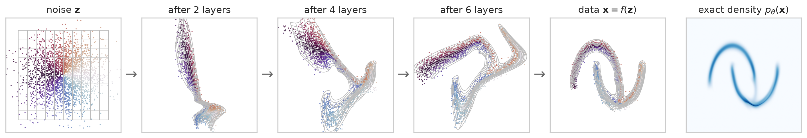
For a general neural network, computing the determinant of the \(d \times d\) Jacobian is prohibitively expensive (for a \(256 \times 256 \times 3\) image, \(d \approx 200{,}000\)). Normalizing flows therefore restrict the architecture to layers that are invertible and have a cheap determinant. A prominent example is the affine coupling layer of RealNVP (Dinh et al. 2017). The input is split into two halves \(\mathbf{x}_a\) and \(\mathbf{x}_b\):
\[ \mathbf{y}_a = \mathbf{x}_a, \qquad \mathbf{y}_b = \mathbf{x}_b \odot \exp\left(s(\mathbf{x}_a)\right) + t(\mathbf{x}_a) \]
where \(s\) and \(t\) are arbitrary neural networks. The layer is easy to invert, since \(\mathbf{x}_a = \mathbf{y}_a\) is known, and its Jacobian is triangular: the log-determinant is simply the sum of the entries of \(s(\mathbf{x}_a)\). Stacking many such layers, and alternating which half is transformed, yields a flexible model. Glow (Kingma and Dhariwal 2018) extended this design and generated realistic faces at high resolution.
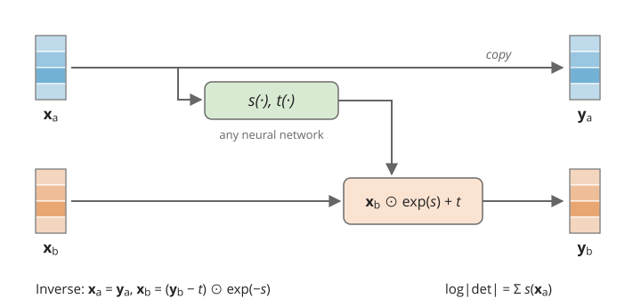
Normalizing flows trade architectural flexibility for exact likelihoods: every layer must be invertible and have a cheap Jacobian determinant.
Pros
- Exact likelihood computation
- Exact inference: every image has exactly one latent vector
- Fast sampling: one pass through the network
Cons
- Restricted architectures (invertible layers, cheap determinants)
- Latent space as large as the data
- Sample quality lags behind GANs and diffusion models
6.2 Flow Matching
Instead of a fixed number of invertible layers, one can describe the transformation from noise to data as a continuous process over time \(t \in [0, 1]\). A neural network \(v_\theta(\mathbf{x}_t, t)\) predicts a velocity: in which direction, and how fast, the point \(\mathbf{x}_t\) should move at time \(t\). Starting from noise \(\mathbf{x}_0 \sim \mathcal{N}(\mathbf{0}, \mathbf{I})\), a sample is generated by following the velocity field until \(t = 1\), i.e. by solving an ordinary differential equation (ODE):
\[ \frac{d\mathbf{x}_t}{dt} = v_\theta(\mathbf{x}_t, t) \]
Such models are known as continuous normalizing flows (Chen et al. 2018). For a long time, they were expensive to train, because the ODE had to be simulated during training. Flow matching (Lipman et al. 2023; Liu et al. 2022) solves this problem with a surprisingly simple training procedure. Note that, in contrast to the diffusion notation above, \(t = 0\) denotes noise and \(t = 1\) denotes data.
During training, we pair a training image \(\mathbf{x}_1\) with a random noise image \(\mathbf{x}_0 = \mathbf{\epsilon} \sim \mathcal{N}(\mathbf{0}, \mathbf{I})\) and connect them with a straight line:
\[ \mathbf{x}_t = (1 - t)\, \mathbf{\epsilon} + t\, \mathbf{x}_1 \]
Along this line, the velocity is constant: \(\frac{d\mathbf{x}_t}{dt} = \mathbf{x}_1 - \mathbf{\epsilon}\). The network is trained to predict this velocity at randomly sampled times \(t\):
\[ \mathcal{L} = \mathbb{E}_{t, \mathbf{x}_1, \mathbf{\epsilon}} \left[ \left\| (\mathbf{x}_1 - \mathbf{\epsilon}) - v_\theta(\mathbf{x}_t, t) \right\|^2 \right] \tag{2}\]
It can be shown that a network minimizing Equation 2 learns a velocity field that transports the noise distribution to the data distribution. Note the similarity to the diffusion objective: both mix an image with noise and train a network with a simple regression loss. Instead of the noise \(\mathbf{\epsilon}\), the network predicts the direction from noise to data.
To generate a sample, we start from noise and take small steps along the predicted velocity (Euler method):
\[ \mathbf{x}_{t + \Delta t} = \mathbf{x}_t + \Delta t \, v_\theta(\mathbf{x}_t, t) \]
In contrast to many diffusion samplers, no fresh noise is injected: given the initial noise, sampling is deterministic.
Figure 15 contrasts training and sampling for 1D data. During training, noise and data points are paired at random, so the straight lines cross. The network cannot know which data point a given \(\mathbf{x}_t\) belongs to and learns the average direction of all lines passing through it. The resulting trajectories never cross, and they split the noise distribution into the two modes of the data distribution.
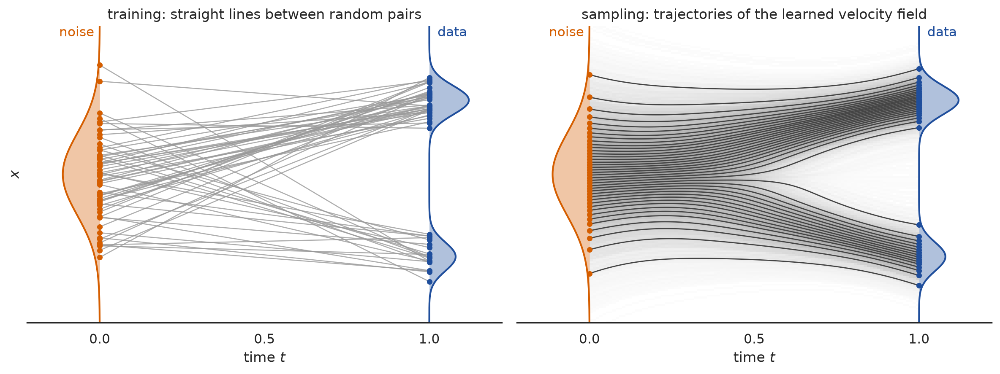
🤔 Think About It
Training uses straight lines between noise and data. Why can flow matching models often generate images with fewer steps than diffusion models?
Key considerations
If the path from noise to data were exactly straight, a single Euler step would reach the end point. The learned velocity field averages over all image-noise pairs that pass through a point, so the actual sampling paths are curved, but typically less than those of diffusion models. Rectified flow (Liu et al. 2022) straightens the paths further by re-training on noise-image pairs generated by the model itself.
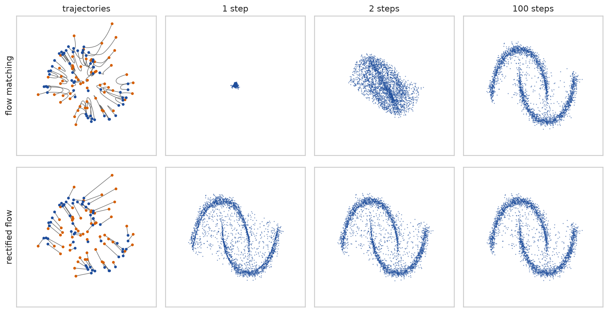
Flow matching has become the basis of many modern text-to-image models. Stable Diffusion 3 (Esser et al. 2024) trains a transformer with a rectified flow objective in the latent space of an autoencoder, and FLUX.1 Kontext (Labs et al. 2025) uses flow matching for both image generation and instruction-based editing.
Pros
- High-quality, diverse outputs
- Simple, stable training (regression loss, no simulation)
- Deterministic sampling, often with fewer steps than diffusion
Cons
- Sampling still requires multiple network evaluations
- High compute (training + inference) cost
- Likelihood computation possible, but expensive
7 Comparing the Model Families
The model families make different trade-offs with respect to the desirable properties of generative models (Properties and Trade-offs). Figure 17 summarizes them.
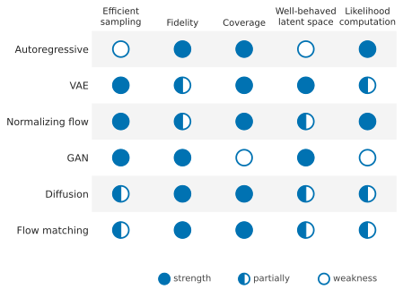
8 Conditioning Across Model Families
So far, we have introduced the model families mostly in their unconditional form: they learn to model or sample from \(p(\mathbf{x})\).
In practice, these model families can often be extended to conditional generation, where the model learns:
\[ p_\theta(\mathbf{x} \mid \mathbf{c}) \]
The condition \(\mathbf{c}\) can be a class label, text prompt, source image, mask, layout, depth map, or reference image.
For this lecture, the important point is simple: conditioning does not define a separate model family. It is a way to control models from different families.
| Model family | How conditioning can enter |
|---|---|
| Autoregressive models | condition each prediction step on \(\mathbf{c}\) |
| VAEs | condition encoder and/or decoder on \(\mathbf{c}\) |
| GANs | condition generator and often discriminator on \(\mathbf{c}\) |
| Diffusion models | condition the denoising network on \(\mathbf{c}\) |
| Flow matching | condition the velocity network on \(\mathbf{c}\) |
Modern text-to-image and image-editing systems use these ideas extensively.